Vehicles
Lagos traffic as it's built today, plus concepts for the vehicles the vision asks for but that don't exist yet. Budgets (vision v2 §4): hero vehicles about 5–10k tris at LOD0, background traffic about 2–4k.
reference/*/README.md.In the game

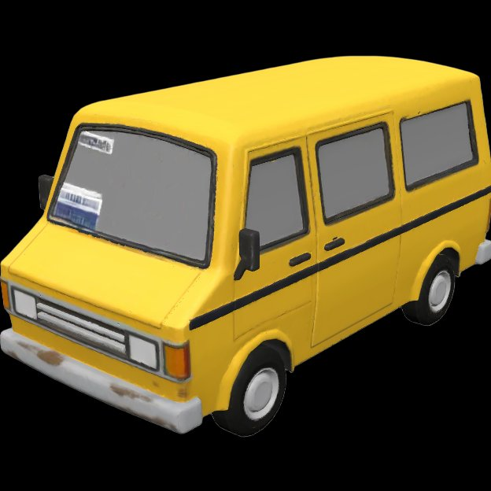

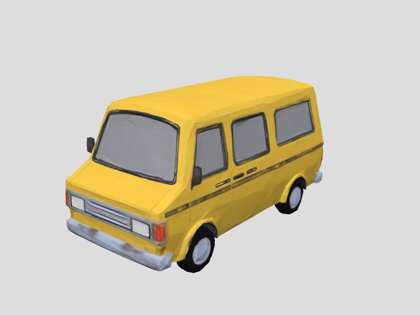

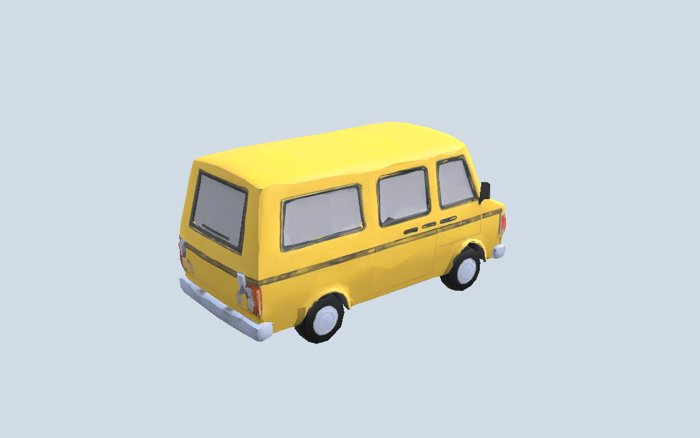

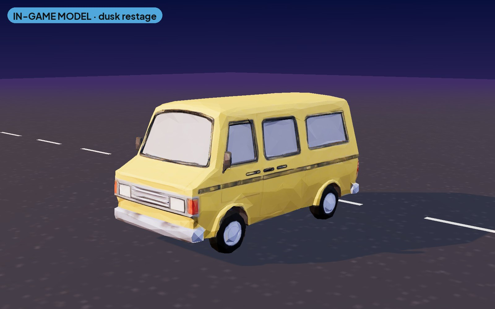
Danfo (yellow bus)
Hero traffic. About 7.4k tris after decimation (budget 5–10k). Telegraph: flashing headlights before it pulls out.

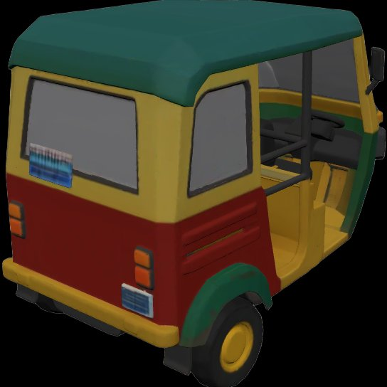

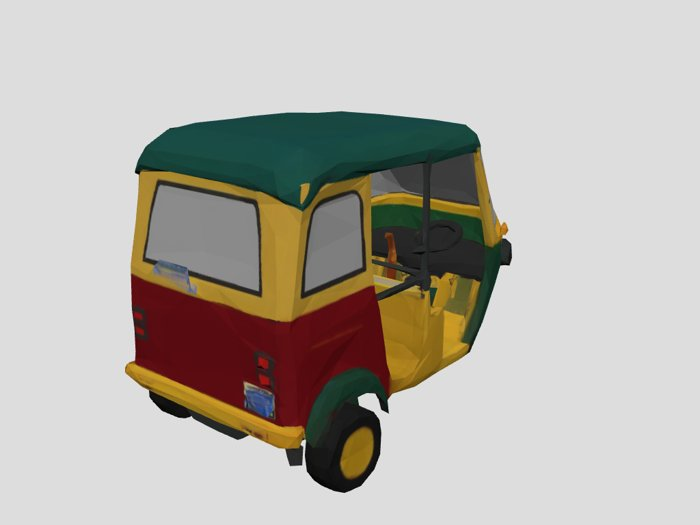

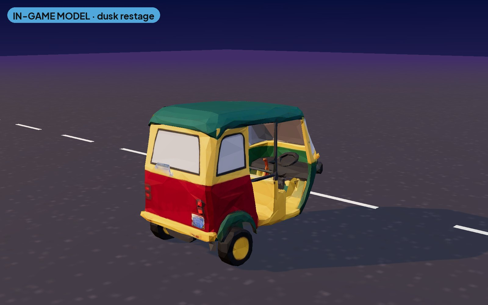
Keke Napep
About 7.4k tris. Short and fast in narrow lanes. More of them during fuel scarcity.

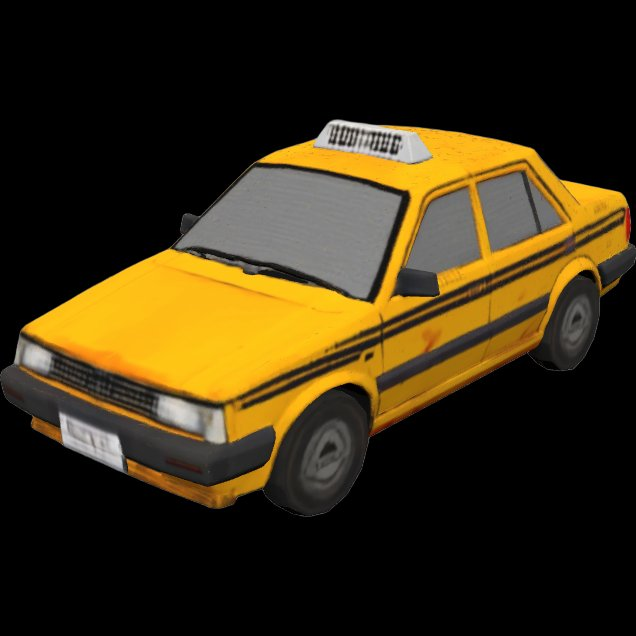

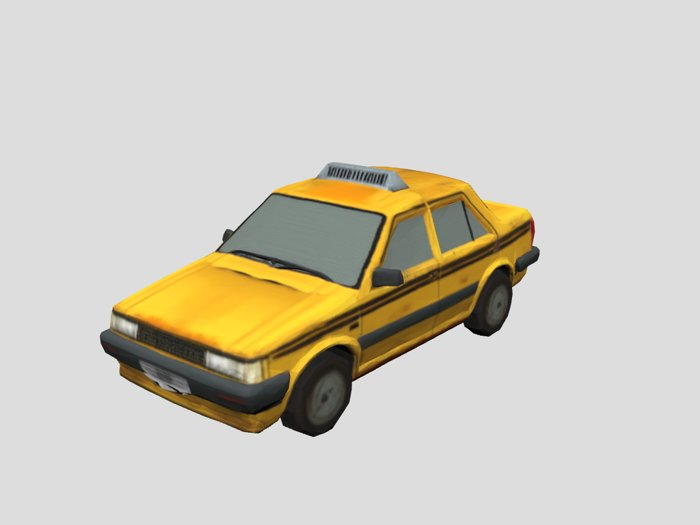

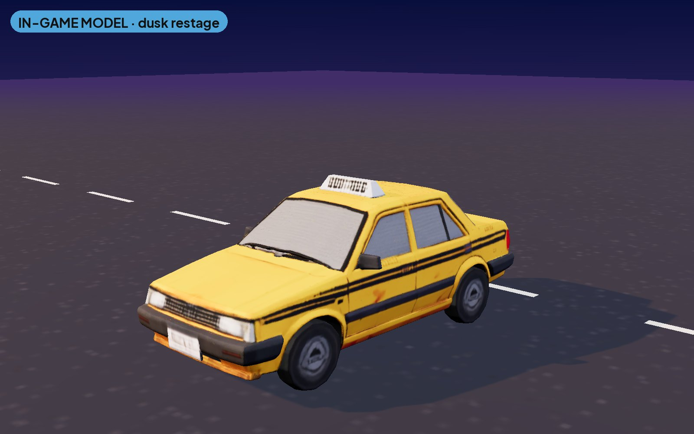
Lagos taxi
About 7.7k tris. Yellow with a black check band.
Trucks (references)

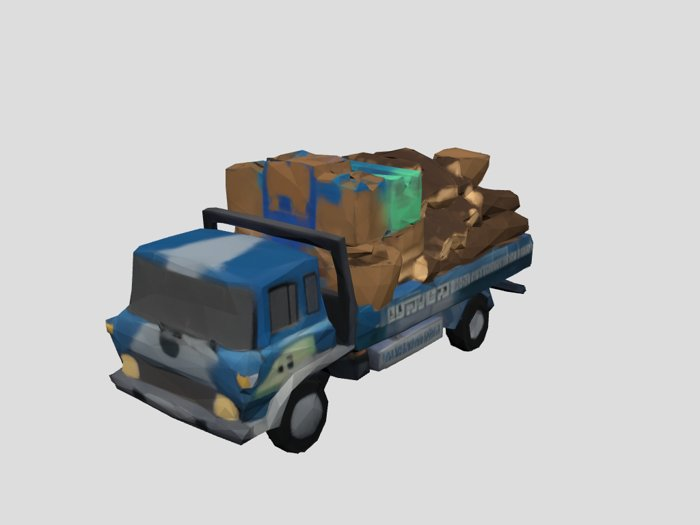

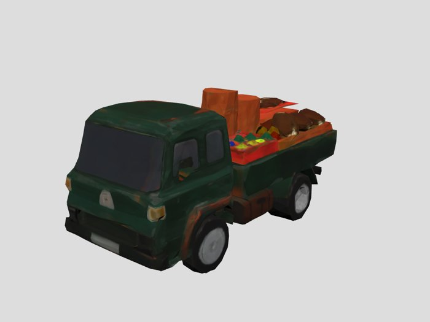

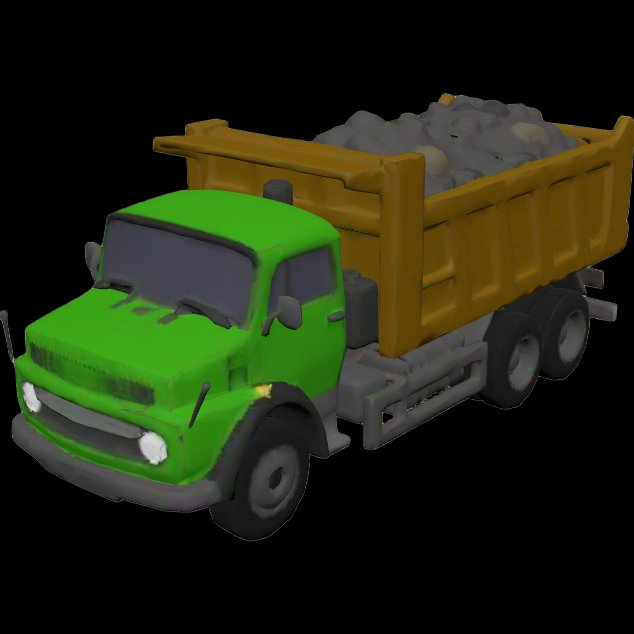

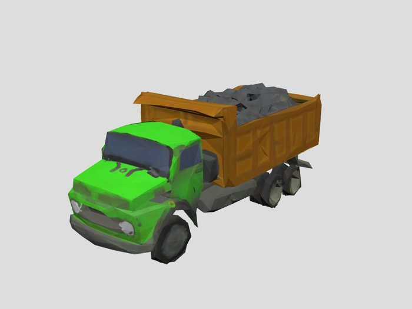
New vehicles CONCEPT
From the vision gaps: okada (fuel scarcity: “more keke and okada”), petrol tanker and BRT bus. Proportions are set against the danfo (about 3.6 m long). Liveries and company names are fictional; no real operators or brands.

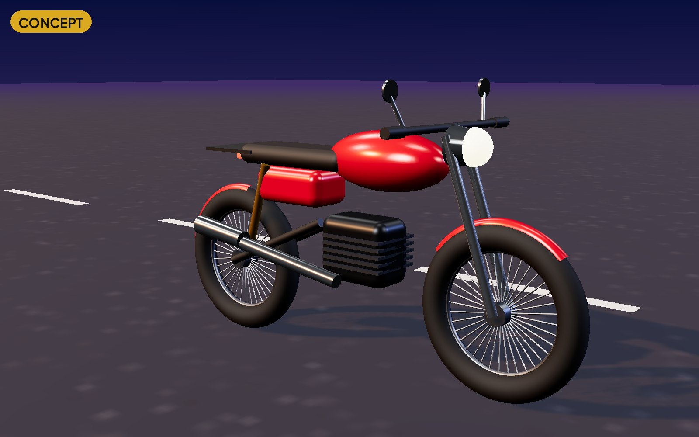

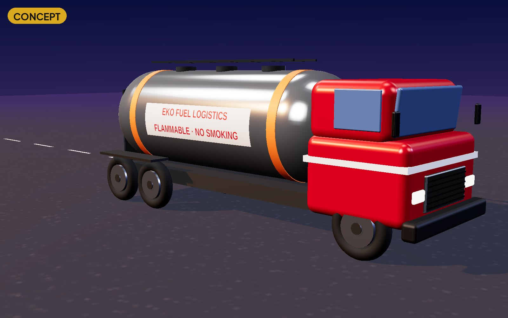

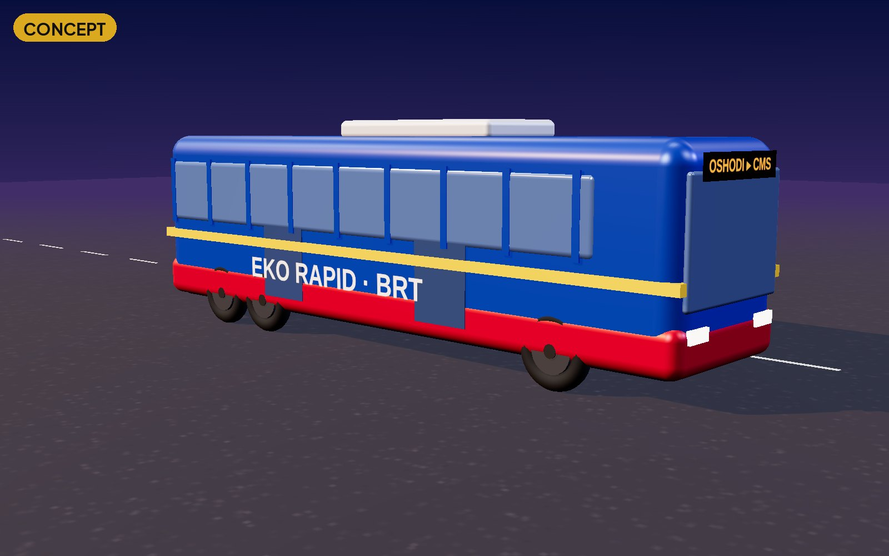
Danfo paint jobs CONCEPT
“Danfo garage: paint jobs, slogans painted on the back” (vision v1). These are rendered on the shipped danfo mesh with a repaint shader and projected decals, so they work as material/decal swaps with no new mesh. Part of pack_skins_lagos (price TBD, store).

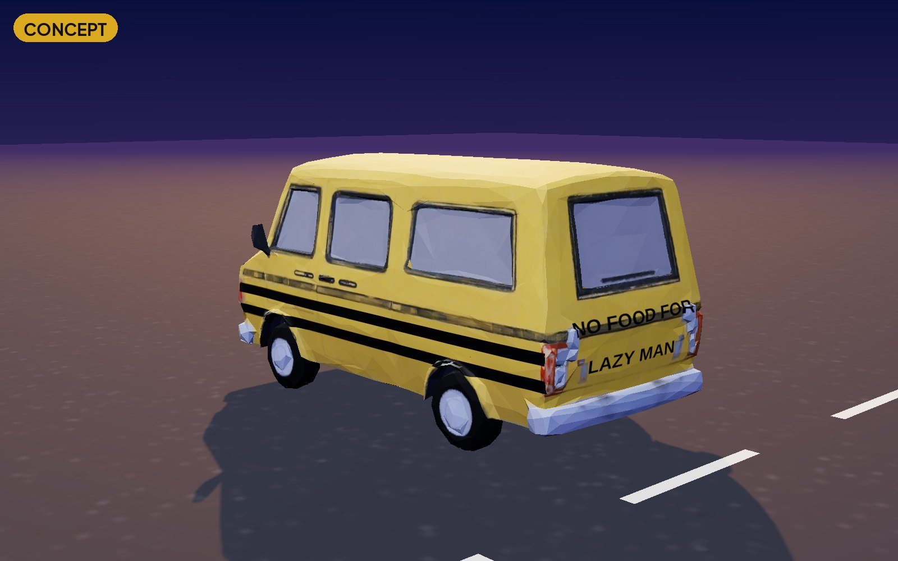
Classic yellow, two black stripes, black back slogan

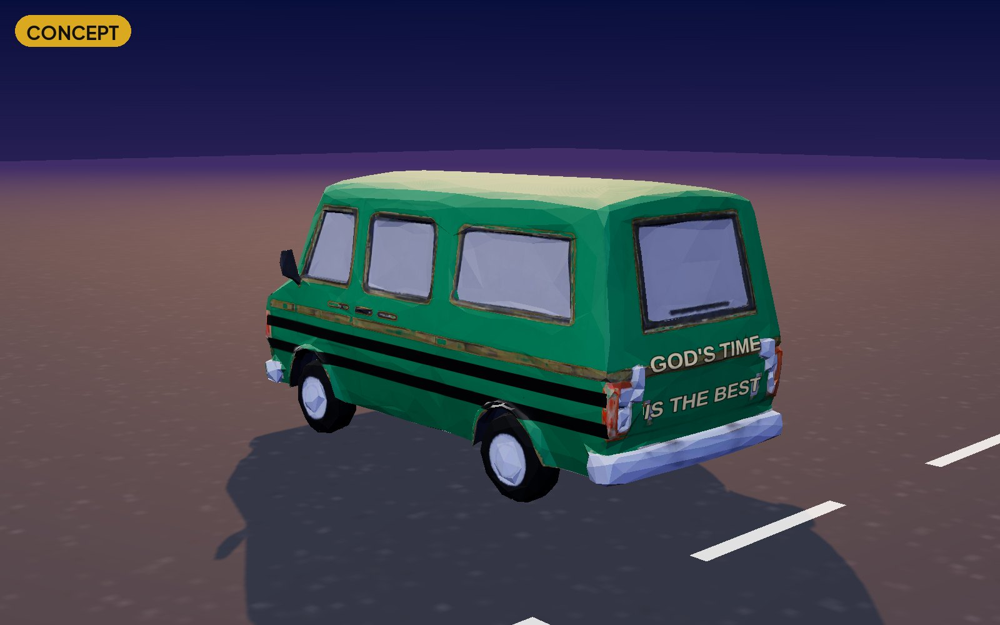
Bottle green, black stripes, gold slogan

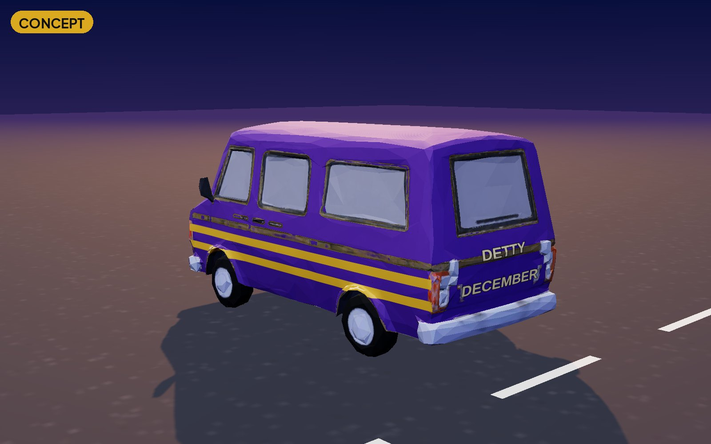
Royal purple, gold stripes, seasonal skin

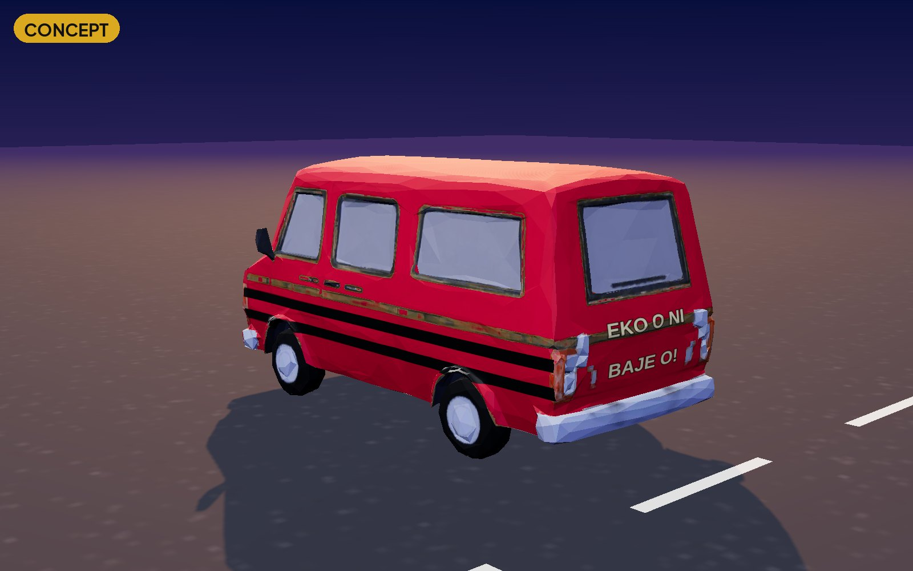
Lagos red, black stripes, gold slogan